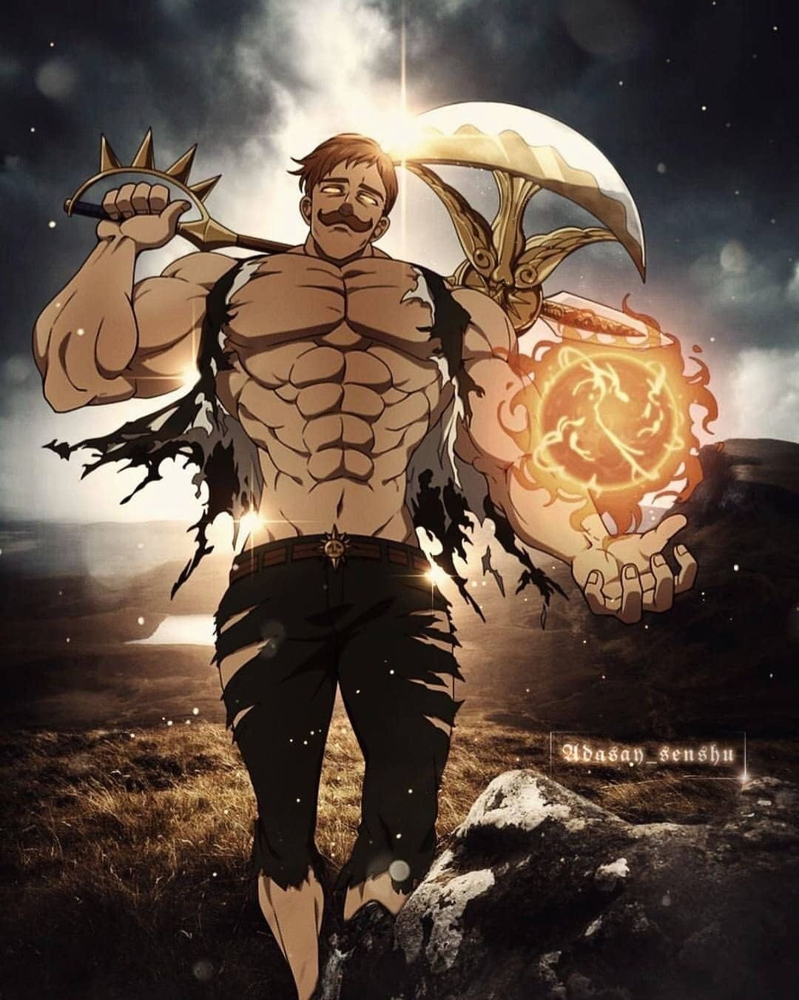

Escanor
Escanor, also known as the Lion's Sin of Pride, is a member of the Seven Deadly Sins. Escanor is known for his unique power called Sunshine, which makes him incredibly powerful during the day but leaves him weak and frail at night. His Sacred Treasure is the Divine Axe, Rhitta1. Despite his immense strength, Escanor is known for his love of poetry and his tendency to boast about his own greatness. He is also deeply in love with Merlin and is one of the most powerful members of the Seven Deadly Sins.